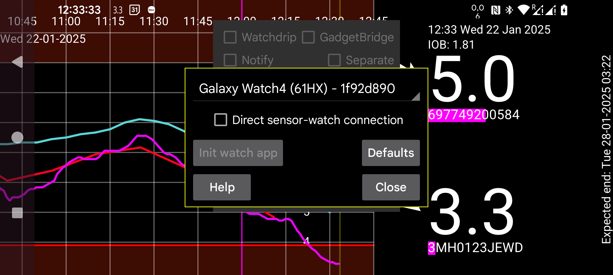

ar az be de es fa fr hi it ja ko nl pl pt ru tr uk uz zh en
«واردکردن مقدارها روی ساعت»: مقدارهای انسولین، کربوهیدرات و فعالیت را بهجای تلفن، روی ساعت ثبت کنید (منوی دوم ← مقدار). اگر میخواهید قلمهای NovoPen را با تلفن اسکن کنید این گزینه را روشن نکنید. اگر تلفن همراهتان نیست، روی ساعت میتوانید از «منوی چپ ← حسگر ← جابهجایی» استفاده کنید. (Amount) (Novopens) (Switch)
«اتصال مستقیم حسگر به ساعت»: تعیین میکند ساعت مستقیماً به حسگر وصل شود یا نه. تغییر این گزینه تنها زمانی ممکن است که دادههای ساعت و تلفن همگام باشند. برای همگامکردن، در «آینهسازی» هر دو دستگاه گزینههای «همگامسازی» و «راهاندازی مجدد اتصال» را به کار ببرید. اگر فراموش کردهاید پیش از بیرونرفتن بدون تلفن این گزینه را روشن کنید، روی ساعت «منوی چپ ← حسگر ← جابهجایی» را بزنید تا ساعت مستقیم وصل شود. وقتی دوباره ساعت و تلفن در برد بلوتوث قرار گرفتند، به تلفن پیام فرستاده میشود تا اتصال مستقیم به حسگر را متوقف کند و جهت آینهسازی را برعکس کند. (Switch)
«پیشفرضها»: تنظیمات اتصال را به مقدارهای پیشفرض بازمیگرداند؛ مانند «فقط فعال» و «اسکنها» در «آینهسازی» ساعت و تلفن. اگر تنظیمات بهاشتباه، مثلاً با تماس آب حمام یا در خواب، تغییر کردهاند این دکمه را بزنید. اگر بهجای این کار نسخهٔ ساعت را دوباره نصب یا دادههای آن را پاک کنید، باید اتصال آینهسازی مربوط به ساعت را نیز از تلفن حذف کنید. (Mirror)
نسخهٔ خاصی از Juggluco روی ساعت Wear OS اجرا میشود. برای اسکن حسگر به تلفن Android دارای NFC نیاز دارید. دادههای اسکن از طریق TCP به ساعت فرستاده میشوند. سپس دو حالت ممکن است:
حسگر به تلفن متصل بماند و تلفن هر مقدار گلوکز دریافتی از بلوتوث را از طریق TCP به ساعت بفرستد؛
ساعت Wear OS با بلوتوث مناسب، خود مستقیماً به حسگر متصل شود.
نمونهتصاویر در وبسایت Juggluco Wear OS موجودند. (https://www.juggluco.nl/JugglucoWearOS)
برای راهاندازی این مراحل را انجام دهید:
مطمئن شوید بلوتوث و وایفای در ساعت و تلفن کار میکنند؛
بررسی کنید ساعت فضای ذخیرهسازی و RAM کافی داشته باشد. اگر حافظه در لحظهٔ حساسی پر شود، ممکن است لازم باشد Juggluco را دوباره نصب کنید؛
ابتدا نسخهٔ تلفن Juggluco را با حسگر راهاندازی کنید. «استفاده از بلوتوث» باید روشن باشد و چند بار حسگر را اسکن کنید؛
نسخهٔ Wear OS برنامهٔ Juggluco را روی ساعت نصب و اجرا کنید؛ (Install)
در تلفن به «منوی چپ ← ساعت ← تنظیمات Wear OS» بروید؛ ساعت شما باید در فهرست کشویی دیده شود. (Wear OS Config)
اگر همهچیز درست باشد، روی تلفن و ساعت اتصال TCP تنظیم میشود و دادههای تلفن به ساعت منتقل میشوند. اگر مدت زیادی از Juggluco استفاده کردهاید، انتقال دادههای انباشته ممکن است طول بکشد. در صفحهٔ «آینهسازی» تلفن (منوی میانی سمت چپ) و ساعت (منوی چپ) بررسی کنید اتصالی با شناسهٔ ساعت وجود دارد؛ در سمت ساعت باید IP تلفن هم نوشته شده باشد. اگر اتصال یا IP نیست، «راهاندازی برنامهٔ ساعت» را دوباره بزنید. اگر باز هم ساخته نشد، ارتباط بلوتوث و برنامهٔ همراهِ مسئول اتصال ساعت را بررسی کنید. اگر بعدها IP درست دیده نمیشود، وایفای یا اینترنت همراه تلفن را یک بار خاموش و روشن کنید. (Mirror)
اگر ارتباط برقرار شده باشد، همان دادههای Juggluco تلفن روی ساعت نیز دیده میشوند. هر گلوکز تازه از طریق TCP به ساعت میرود. بعضی تنظیمات مانند واحد، آستانههای هشدار و یادآورها نیز منتقل میشوند. تغییرهای بعدی را باید روی خود ساعت اعمال کنید.
اگر ساعتتان بلوتوث قابل اعتمادی دارد و میخواهید بدون همراهداشتن تلفن مقدارهای گلوکز را ببینید، میتوانید ساعت را مستقیم به حسگر متصل کنید. پس از انتقال کامل دادهها به ساعت، «اتصال مستقیم حسگر به ساعت» را روشن کنید. در نتیجه «استفاده از بلوتوث» روی تلفن خاموش و روی ساعت روشن میشود. سپس طبق صفحهٔ آینهسازی، «دادههای پیوسته» از ساعت به تلفن فرستاده میشوند. وقتی ساعت و تلفن همگام نیستند این گزینه قابل تغییر نیست.
اگر حسگر مستقیماً به ساعت وصل است و مقدارها به تلفن فرستاده میشوند، «اسکنها» نیز باید از تلفن به ساعت بروند و پیش از اسکن دوبارهٔ حسگر با Juggluco، دادههای پیوسته همگام باشند. تنظیمات پیشفرض این کار را انجام میدهند. وگرنه ممکن است مقدارهای قدیمی به ساعت برگردند یا اطلاعات احراز هویت تازه به ساعت نرسند و خطاهای «کلید بازگشایی» رخ دهند.
تنظیمات اتصال را فقط وقتی تغییر دهید که دادههای تلفن و ساعت همگام و نسخهٔ کاملی از هم باشند؛ تنها استثنا این است که میتوانید دادههای «مقدارها» را منتقل نکنید.
برای انتقال اولیهٔ حجم زیادی داده از تلفن به ساعت، میتوانید ساعت را روی شارژر قرار دهید؛ برای نمونه بعضی ساعتها هنگام شارژ وایفای را روشن میکنند.
اتصال ساعت و تلفن، نسخهای تغییریافته از «آینهسازی» میان تلفنهای Juggluco و رایانههای دارای juggluco-server است. وقتی اتصال خودکار طبق روش بالا ساخته شود، ویژگیهای زیر را دارد: (Juggluco server)
IP طرف مقابل اتصال بهطور خودکار پیدا میشود. معمولاً لازم نیست مستقیماً صفحهٔ آینهسازی را ویرایش کنید؛ برای تغییرها میتوان از «منوی چپ ← ساعت ← تنظیمات Wear OS» استفاده کرد.
اگر ارتباط وایفای میان ساعت و تلفن کار نکند، Juggluco از TCP روی بلوتوث استفاده میکند. بهجز هنگام نخستین انتقال حجم زیاد دادهها به ساعت، میتوانید وایفای ساعت را خاموش نگه دارید.
اگر میان Juggluco روی تلفن و ساعت هیچ دادهای مبادله نمیشود، موارد زیر را بررسی کنید:
بلوتوث تلفن و ساعت روشن باشد (وایفای میتواند خاموش باشد)؛
برنامهٔ همراه ساعت نشان دهد ساعت به تلفن متصل است؛
در «آینهسازی» ساعت و تلفن باید اتصالی خودکار با شناسهٔ ساعت وجود داشته باشد؛ همان شناسهای که در «منوی چپ ← ساعت ← تنظیمات Wear OS» تلفن دیده میشود.
«راهاندازی مجدد اتصال» و/یا «همگامسازی» در صفحهٔ آینهسازی ساعت ممکن است مشکل را رفع کنند؛
گاهی باید همان کار را روی تلفن انجام دهید و شاید سپس دوباره روی ساعت تکرار کنید؛
بلوتوث تلفن یا ساعت را خاموش و روشن کنید و سپس دوباره در ساعت «راهاندازی مجدد اتصال» و «همگامسازی» را بزنید؛
گاهی همین کار برای وایفای یا اینترنت همراه لازم است؛
گاهی برای بازگشت عملکرد بلوتوث باید تلفن یا ساعت یا هر دو را راهاندازی مجدد کنید؛
ممکن است تنظیمات آینهسازی ناخواسته تغییر کرده باشند. در تلفن از «منوی چپ ← ساعت ← تنظیمات Wear OS ← پیشفرضها» استفاده کنید. این کار حسگر را نیز دوباره به تلفن متصل میکند، نه ساعت؛ دادههایی که فقط روی ساعت هستند ممکن است بازنویسی شوند؛
اگر هیچیک مفید نبود، نسخهٔ ساعت را دوباره نصب و از نو راهاندازی کنید. در این حالت اتصال قدیمی ساعت را در «منوی میانی سمت چپ ← آینهسازی» تلفن حذف کنید.
اگر دادهها روی ساعت موجود باشند اما از تلفن پاک شده باشند، بازیابی دشوارتر است: نخست باید به روشی یک اتصال آینهسازی کارا برای بازگرداندن دادهها به تلفن ایجاد کنید.
نسخهٔ Wear OS برنامهٔ Juggluco یک صفحهٔ ساعت دارد که گلوکز فعلی را کنار زمان و حداکثر چهار افزونه (complication) نشان میدهد. برای استفاده، آن را در برنامهٔ همراه ساعت از میان صفحههای بارگیریشده انتخاب کنید. معمولاً با روشنشدن صفحه، آخرین گلوکز نشان داده میشود. در حالت نمایشگر همیشهروشن (ambient)، مقدار فقط هنگام تغییر نشانگر دقیقه یا فشار دکمه یا بالاآوردن دست بهروزرسانی میشود؛ بنابراین ممکن است تا یک دقیقه تأخیر داشته باشد. برخی ساعتهای جدیدتر مانند Galaxy Watch 7 و Watch Ultra بهمنظور صرفهجویی باتری اجازهٔ استفاده از اینگونه صفحههای ساعت برنامهنویسیشده را نمیدهند.
Juggluco 8.2.0 و بالاتر افزونههای «مقدار گلوکز»، «پیکان روند» و «مقدار همراه پیکان» دارد که در Wear OS 5 نیز کار میکنند. این افزونهها را میتوان در هر صفحهٔ ساعتی با جایگاه تصویر کوچک یا بزرگ استفاده کرد، مانند Time and Track یا Watchface for Juggluco. با Watch Face Studio نیز میتوانید صفحهٔ ساعت خود را بسازید. (Time and Track) (Watchface for Juggluco) (Watch Face Studio)
راه سوم روشنکردن «نمایش شناور گلوکز» در تنظیمات Juggluco روی ساعت است. با مجوزهای مناسب، مقدار گلوکز روی سایر برنامهها نمایش داده میشود؛ بنابراین هنگام استفاده از صفحههای ساعت گوناگون یا برنامههای ثبت ورزش نیز دیده میشود. اطلاعات بیشتر در نسخهٔ تلفن: «منوی چپ ← تنظیمات ← نمایش شناور گلوکز ← راهنما». (Floating glucose)
از برنامهٔ همراه نیز میتوانید مانند «منوی میانی سمت چپ ← آینهسازی» دادهها را از اینترنت به دستگاههای دیگر بفرستید. اتصال مستقیم ساعت به سرور اینترنتی و انتقال از آن به تلفن دنبالکننده نیز ممکن است: راهنمای اتصال ساعت به سرور. (Mirror)